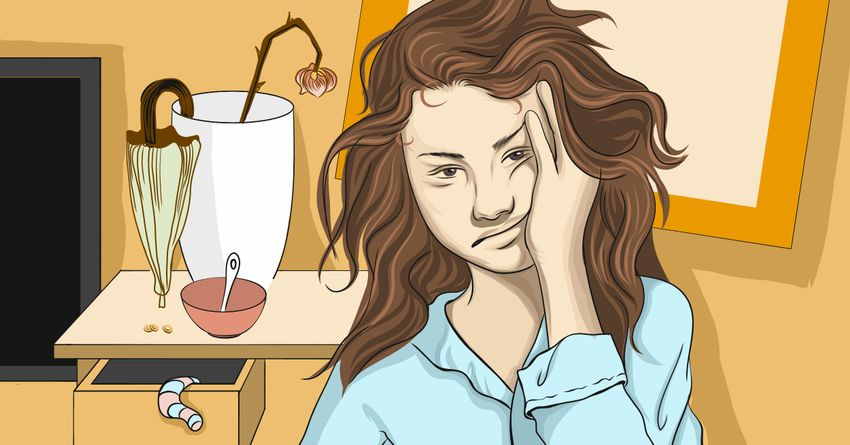

5 things that make you less attractive, according to Science
Are you accidentally putting people off because of small things you do every day? Studies show that attractiveness doesn't just have to do with the body we were born with, but how we choose to act.
While maturity, emotional stability, respect, and honesty are all qualities people look for in a long-term partner, getting the ball rolling and keeping things moving is a little more tricky. Whether you're looking for tips on how to get a date on Tinder or strike up a conversation with that cute guy on the bus, watch out for these 10 things that make you seem less attractive.
1. Lack of Sleep: A study in Sweden found that people who hadn't slept in 31 hours were less attractive, less healthy, and less happy than those who'd had at least 8 hours of shut-eye. Participants said the people with less sleep had "droopy/hanging eyelids, red eyes, dark circles under the eyes, and pale skin." As if you needed another reason to sleep more.
2. Being Stressed Out: If you feel stressed, chances are you look like it, and that's not a good thing. A study conducted in 2013 discovered that men were less likely to be attracted to women who were stressed or anxious. It seems the presence of the stress hormone cortisol affects how we judge another person's fertility and overall health, one researcher suggested.
3. Smiling Too Much: Wipe that smile off your face, because it might be turning people off! According to a study from the University of British Columbia, an overly proud or happy face was deemed less attractive. Participants were given a collection of photographs, and asked to rate the people. Men rated women more attractive when they smiled, but less attractive when they appeared proud. On the other hand, women said men were more attractive when they looked proud vs. happy.
4. Contractive Body Language: Research shows that crossing arms, hanging your head, or hunching your shoulders can be a huge turn-off. A study by four different U.S. universities showed that people were less likely to go on a date with someone who had off-putting body language in their dating profile photos. Instead, they were more attracted to photos of potential partners in "expansive positions," such as reaching their arms upward or standing with squared shoulders.
5. Being Mean: Is the "good girls like bad boys" adage really true? Not always. A Chinese study concluded that people perceived to be mean had a lower attractiveness. Participants (both men and women) were given photos of people with little or no facial expression. Some photos were labeled with positive words, such as "honest," while others said "mean" and "evil." Even though they had neutral faces, the people labeled as mean were rated less attractive.
5 ways to stop being a People-Pleaser
There's nothing inherently wrong with being nice or kind to someone else. In fact, it's a pretty valuable trait. But it can also be something we do to avoid disappointing others or put pressure on ourselves to live up to an ideal image.
A lot of people-pleasers consciously choose to act this way because they are afraid of upsetting others. It is a great way to avoid conflict, but in the long run it will leave you feeling drained and unhappy. It's hard to be true to yourself when you're always changing your actions and words based on what you think other people want.
Be true to yourself instead of trying to fit in. - The most important thing to remember about your behavior is to stay true to yourself. Avoid doing something just because it'll make you look good in someone else's eyes, and stick to what you know is right for you.
Learn to say "NO" – Sometimes people-pleasing can become such a deeply ingrained habit that you have to tell yourself that it is okay to say "no". It's okay to put yourself first and say "no" if someone asks you for something you don't want to do, or if they ask you for something unreasonable or impossible.
Set healthy boundaries – This might seem difficult at first, but it is important that you start noticing what is happening and identify things that need to change. Make a list of the things you are doing that make you feel unhappy or used, like getting coffee for a coworker, and rank them in order of importance with the most significant items on top.
Stop making excuses – Next time someone asks for a favor or asks you to do something that takes up your time or energy, just reject their request without an excuse. If they ask why, tell them that you are in the process of working on your own personal development and would like to focus on that right now, or something similar. It's okay if they don't understand at first, because chances are they will eventually see why it's important for you.
Listen to your inner voice – Life is a journey, and on that journey you will meet many people who will want things from you. You may find yourself becoming someone else's doormat in order to get them to like you. The problem with this is that it will stop you from being able to be happy and make your own decisions. Start listening to what your inner voice is telling you. This voice may be telling you that certain people are toxic and that they aren't worth it.
Related Articles